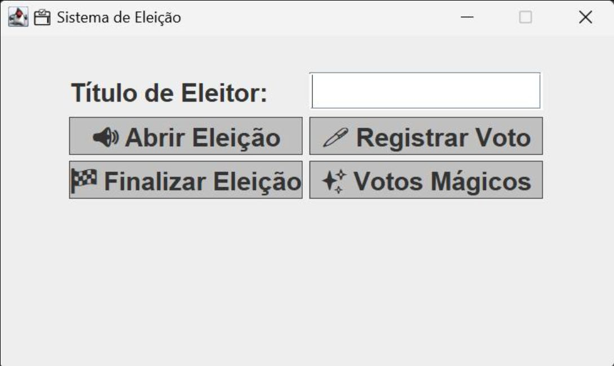

Funcionalidades do Projeto
Interface Fiel
Interface gráfica inspirada na urna real, com teclas numéricas e botões de confirmação, correção e branco.
Gerenciamento
Cadastro e gerenciamento completo de eleitores, candidatos e partidos políticos.
Votação Completa
Processo de votação completo, incluindo registro, validação e apuração dos votos.
Áudio Imersivo
Reprodução do áudio característico da urna brasileira para aumentar a imersão no processo.
Tecnologias e Conceitos Aplicados
Java
Java Swing
Java Sound API
Orientação a Objetos
Arquitetura em Camadas
Galeria do Projeto
Documentos do projeto
O que Aprendi
- Planejar e desenvolver uma aplicação desktop complexa, simulando um sistema real (Urna Eletrônica).
- Implementar interfaces gráficas (GUI) interativas e funcionais utilizando a biblioteca Java Swing.
- Aplicar conceitos sólidos de Programação Orientada a Objetos (POO) para gerenciar Pessoas, Partidos e Votos.
- Estruturar um projeto em camadas (View, Eleição, Pessoas), separando responsabilidades.
- Integrar recursos multimídia em uma aplicação Java, como a reprodução de áudio com a Java Sound API.